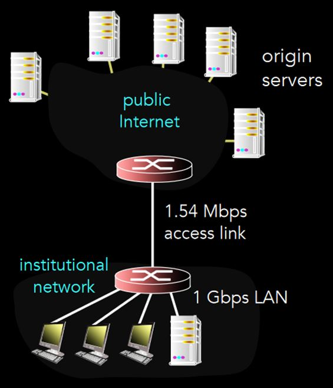
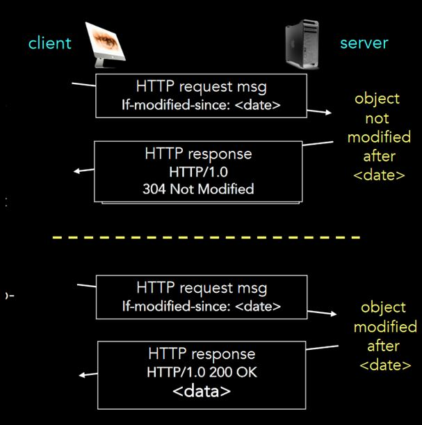

Cookies
Stateful web browsing
내 ID가 backend의 server에 저장됨. 즉, backend에 큰 hash table이 있고 key가 cookie임. 내 browser도 당연히 그 cookie를 갖고 있는 거고. 다음에 내 cookie 알려주면 server가 내 cookie 보고 내 로그인 정보 찾아서 로그인 시켜줌. ㅋㅋ 그래서 아무 cookie나 만들어서 시도하다 보면 다른 사람 계정으로 로그인도 가능. 근데 cookie가 아주 길겠지 당연히.
위키피디아 쳐보니까 쿠키 표준 스펙에 최소 4kb 이상 지원하라고 돼 있음
Web caches
Proxy
Client와 Server를 직접 연결하는게 아니고 중간에 하나를 거치는 거임! 여러 장점이 있음. 내 개인정보를 보호할 수도 있고 (server는 누가 요청 보냈는지 모르니까), Proxy가 cache로써 역할을 할 수도 있고.
내가 서울대 안에서 google.com에 접속하면 서울대 통합 관리하는 proxy로 감. 거기의 router가 나를 google.com으로 연결시켜줌. 그럼 내 입장에서는 proxy가 server고, 구글 입장에서는 proxy가 client네.
DNS
www.naver.com을 보고 223.130.195.95로 바꿔주는 친구.
google.com을 쓰면 IP로 바꿔야지? 근데 미국 애는 미국 IP로 보내고 한국 애는 한국 IP로 보내는게 낫지? 왜냐면 한국에서 미국 가려면 엄청 많은 단계를 거쳐야하니까 대역폭 낭비가 심하잖아.
Local Web Caches

위의 예시를 보자. 100Kb짜리 파일을 1초에 15개씩 요청을 보낸다고 치자. 또, institutional router에서 origin server까지의 RTT는 2초야.
저 상황에서 total delay = RTT + (파일이 access link 통과하는 시간) + (LAN 내부에서 delay)를 계산해보자. RTT는 2초라고 했고 LAN 내부의 delay는 아주 짧아 (거리도 가깝고 bandwidth도 무지 크잖아). 1.54Mbps짜리 link를 1.5Mbps만큼 쓰니까 access link에서의 delay는 무시무시하겠지? Queueing Theory에 의하면 사용률이 100%에 육박할 수록 delay는 무한히 증가하잖아. 근데 지금 사용률이 99%야. 즉, 가운데 access link의 부담을 덜어줘야해.
- Access link의 대역폭을 100Mbps로 늘린다.
- Access link rate가 1%대로 떨어지니까 delay가 거의 없어짐.
- 무지 비쌈 (access link는 말그대로 인터넷이야. 전세계에 깔려 있는 거임)
- Local cache server를 설치한다.
- Cache는 LAN에 연결돼 있음
- Cache hit ratio가 40%라고 하면 access link의 사용률도 40%만큼 줄어듦.
- Access link의 사용률이 40% 줄면 delay는 order of magnitude로 줄어듦. Queueing theory 참고 ㄱㄱ
Conditional get

Client가 그냥 get을 날리는게 아니고 X월 X일 이후로 수정된게 있음?하고 request를 날림. 만약 서버가 없음이라고 대답하면 client는 자신의 cache를 사용함. 수정사항이 있으면 서버가 새로운 data를 보내줌. 그럼 client는 그거 쓰면 되지.
P2P
중국 스트리밍 사이트: 사용자가 너무 많잖아? 그래서 사용자가 서버 역할도 같이함...ㄷㄷ
생각을 해봐... 한국에서 100명이 미국 서버에 접속을 해. 그럼 한국 <-> 미국 통신을 100번을 해야하네. 그냥 한국 <-> 미국 1번만 하고 한국 <-> 한국 99번 하면 안되나? 그런 개념이 있음. Content Centric Network
File distribution: Client-Server
N명이 파일을 다운받음. 파일 크기는 F. 그럼 서버는 NF만큼의 용량을 upload해야겠지? 공식의 us는 업로드 속도. 또 각각 컴터들은 F만큼 다운을 받아야겠지? 그 중에 제일 느린 친구의 속도가 dmin. 쟤네 중 최댓값이 전체 다운로드 시간의 lower bound.
File distribution: P2P
38쪽의 식. 이건는 P2P 버전으로 다시 공식을 쓴 거임. 서버가 파일 업로드하는 거는 한번만이고, F/dmin은 그대로고, 마지막의 항은 각 peer들이 upload하는 시간임. 마지막 항 보면, N이 커지면 분자가 커지지만 분모도 커져서 감당가능함(각 peer가 upload도 하니까).
Torrent
파일을 256kb짜리 chunk로 나눔. chunk로 주고받음
- requesting chunks
- 각 peer는 연결된 peer들의 chunk list를 볼 수 있음.
- chunk list를 다 보고 그 중에서 가장 rare한 chunk를 요청함
- sending chunks
- 주기적으로 n명의 best friend를 골라서, 걔네랑 highest rate로 chunk를 주고받음
- n이 얼마인지는 설정하기 나름
- 가끔씩 random으로 peer를 골라서 걔랑 chunk를 주고받음
- 그럼 걔가 새로운 best friend가 될 가능성도 있는 거지
- 주기적으로 n명의 best friend를 골라서, 걔네랑 highest rate로 chunk를 주고받음